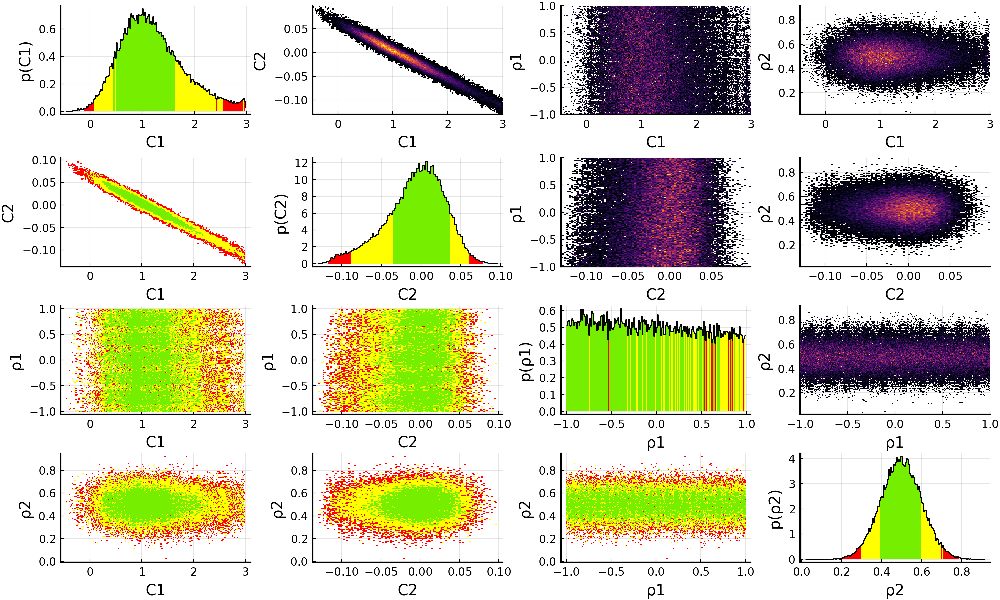
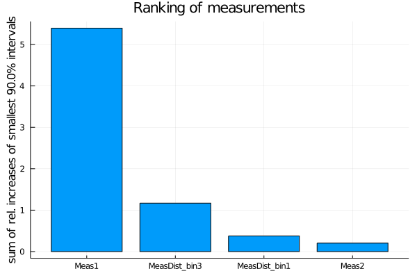

EFTfitter.jl - Advanced Tutorial
Table of contents:
Model uncertainties
The predictions for the observables can be affected by uncertainties that dependend on the current value of the model parameters. Such uncertainties can be included in the analysis by letting the observable functions return a tuple of numbers, where the first number is the prediction and the second number is the absolute uncertainty on that prediction.
function xsec1(params)
coeffs = [20.12, 5.56, 325.556]
prediction = myfunc(params, coeffs)
uncertainty = 0.1 * prediction # assume a 10% uncertainty
return (prediction, uncertainty)
endNote: It is possible to specify a model uncertainty only for some of the observables. When the observable functions returns a single number, EFTfitter.jl will assume that the model uncertainty is zero for this observable. However, please note that as soon as one observable function returns a tuple, the runtime of the model will probably increase, as the model uncertainties then need to be evaluate in each step. Therefore, model uncertainties should only be used when the uncertainty value is depending on the model parameters. Constant uncertainties should just be specified in the uncertainties field of the measurements.
Vector of functions for a BinnedMeasurement
When using binned measurements, a vector of functions giving the predictions for the observable needs to be passed. It contains a function for each of bin and has only the model parameters as its argument. Defining a separate function for each bin can, however, become tedious for a large number of bins, especially since typically the bins of a distribution have a similar functional dependence on the model parameters and only differ in some coefficients. In such cases, it is possible to use Julia's anonymous functions to quickly create the vector of functions. The distribution in our basic tutorial has been defined by implementing three functions that all call the same function myfunc but with different values for the coefficients The same result can also be achieved like this:
function get_coeffs(i) # return the coefficients for bin i
coeffs = [[2.2, 5.5, 6.6], [2.2, 5.5, 6.6], [2.2, 5.5, 6.6]]
return coeffs[i]
end
function my_dist_func(params, i)
coeffs = get_coeffs(i)
return coeffs[1] * params.C1 + coeffs[2] * params.C1 * params.C2+ coeffs[3] * params.C2
endcreate an array of anonymous functions
diff_xsec = Function[x -> my_dist_func(x, i) for i in 1:3]Using covariance matrices
Information about the uncertainties of measurements need to be provided to EFTfitter.jl in terms of the uncertainty values and corresponding correlation matrices. If you have these information in terms of covariance matrices, you need to convert it to correlation matrices and uncertainty values before. The function cov_to_cor can be used for this:
cov_syst = [3.24 0.81 0.378 0.324 0.468;
0.81 0.81 0.126 0.162 0.234;
0.378 0.126 0.49 0.126 0.182;
0.324 0.162 0.126 0.81 0.234;
0.468 0.234 0.182 0.234 1.69]
cor_syst, unc_syst = cov_to_cor(cov_syst)measurements = (
Meas1 = Measurement(xsec1, 21.6,
uncertainties = (stat=0.8, syst=unc_syst[1], another_unc=2.3)),
Meas2 = Measurement(Observable(xsec2, min=0), 1.9,
uncertainties = (stat=0.6, syst=unc_syst[2], another_unc=1.1), active=true),
MeasDist = BinnedMeasurement(diff_xsec, [1.9, 2.93, 4.4],
uncertainties = (stat = [0.7, 1.1, 1.2], syst= unc_syst[3:5], another_unc = [1.0, 1.2, 1.9]),
active=[true, false, true]),
)Nuisance Correlations
When performing an analysis with unknown correlation coefficients, it is possible to treat them as nuisance parameters in the fit. For this, we define a further NamedTuple consisting of NuisanceCorrelation objects:
nuisance_correlations = (
ρ1 = NuisanceCorrelation(:syst, :Meas1, :Meas2, -1..1),
ρ2 = NuisanceCorrelation(:syst, :MeasDist_bin1, :MeasDist_bin3, truncated(Normal(0.5, 0.1), -1, 1)),
)In the NuisanceCorrelation object we specify the name of the uncertainty type, the names of the two measurements we want to correlate using the nuisance correlations and a prior for the nuisance parameter. Note that the nuisance parameters should only be varied in the interval (-1, 1) as they represent correlation coefficients. For ρ1 we choose a flat prior between -1 and 1. For ρ2 we have some expectations and formulate them using a Gaussian prior with μ=0.5 and σ=0.1. However, to ensure that ρ2 is only varied in the allowed region of (-1, 1), we truncate the normal distribution accordingly.
We need to modify the definition of the EFTfitterModel by also passing the nuisance_correlations:
model = EFTfitterModel(parameters, measurements, correlations, nuisances = nuisance_correlations)
savefig(p, "plot.pdf")
When using nuisance correlations, it may happen that the fit does not converge anymore. This happens mainly when the correlation values are close to -1 or +1. In such a case, you can try to reduce the allowed ranges in the priors for the Nuisance correlations to investigate at which values this happens.
Ranking of measurements and uncertainties
With the rank_measurements and rank_uncertainties functions, the influence of the individual measurements or uncertainty types on the result of a fit can be estimated. For the ranking, each active measurement (respectively uncertainty type) is deactivated at a time and the fit is repeated. The results of the fits with a deactivated measurement (or uncertainty type) are then compared to the fit result with all measurements (uncertainty types) activated. A ranking is calculated based on a ranking criterion calculated from the posterior distributions of these fits.
The default ranking criterion is the relative increase of the total width of the smallest interval containing 90% of the posterior probability when deactivating a measurement. For models with more than one parameter, the sum of the relative increases of all one-dimensional smallest intervals is used, i.e. SumOfSmallestIntervals(p=0.9, bins=200).
measurement_ranking = EFTfitter.rank_measurements(model)The sampling algorithm to be used can be passed with the keyword sampling_algorithm. By default, BAT.MCMCSampling() is used, i.e. Metropolis-Hastings with 4 chains and 100000 steps.
plot(measurement_ranking, title = "Ranking of measurements")
For ranking the uncertainty types, the relative decrease is used.
uncertainty_ranking = EFTfitter.rank_uncertainties(model,
criterion = SumOfSmallestIntervals(p=0.9, bins=200),
sampling_algorithm = SobolSampler(nsamples = 10^5), order = :values)
plot(uncertainty_ranking, title = "Ranking of uncertainty types") Please see the ranking documentation for further ranking criteria and keyword arguments.
Please see the ranking documentation for further ranking criteria and keyword arguments.
This page was generated using Literate.jl.